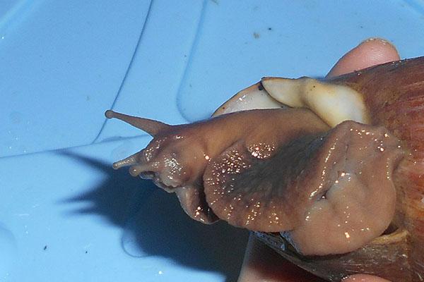
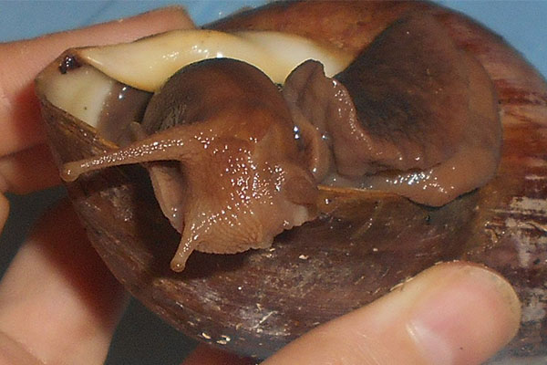
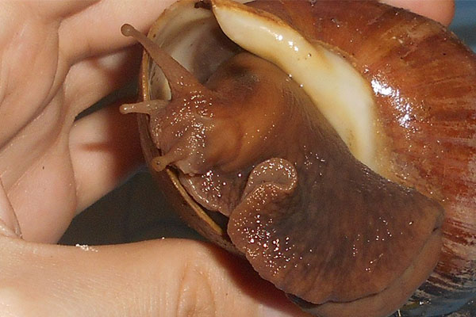
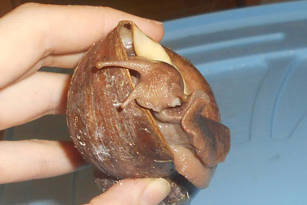

Регенерация у улиток.
Все мы знаем, что улитки способны регенерировать поломанные участки своей раковины (прироста) и причем довольно быстро, при надлежащих условиях, полноценном питании и подкормками. Но как быть с телом, кожными покровами? Сможет ли существо залатать небольшие ранки или наоборот, очень серьезные повреждения? На этот счет я нашла довольно интересную информацию.
Регенерация-это процесс восстановления утраченных организмом или поврежденных структур, с ее помощью поддерживается целостность организма. Так же различают 2 вида регенерации:
-физиологическая-восстановление органов, тканей, клеток или внутриклеточных структур после разрушения их в процессе жизнедеятельности организма
-репаративная-восстановления структур после травмы или под действием других повреждающих факторов
Поговорим мы сейчас о репаративной регенерации.
В 1729-1799 Ладзаро Спалланцани (итальянский натуралист и физик) проводил эксперимент - отрезал головы улиткам и слизням. Головы он отрезал и полностью, и частично, отслеживалось то, что погибало около 50% улиток и слизней, другие же 50% спокойно наращивали себе недостающие части и даже новую голову, а так же даже продолжала жизнедеятельность без головы!
Так же опыты проводились и в 2005-2008 гг.
Отрезались глазные щупальца моллюскам, по прошествии 2-3 месяцев глаз отрастал заново, правда он значительно уступал интактному глазу, количество клеток в сетчатке значительно меньше, сам глаз короче, однако, он функционирует.
Кому интересно, так же результаты опытов с сайта earthpapers.net по отрезанию рожек у фулик
Ниже представлено фото, после травмы: кот отгрыз улитке пол головы, но при должном уходе улитка выжила и отрастила себе недостающую часть с глазом.
Екатерина Степанова :"Всем добрый вечер! Как и обещала сегодня днём, выкладываю фото улитки, у которой моя кровожадная кошка весной оттяпала пол мордахи, глаз и "нос". Рана затянулась, "нос" не вырос, а вот глаз регенирировал, правда он в два раза короче, чем был, но со зрачком, функционирует, как и прежний".
Будьте внимательны и осторожны, кошки и собаки способны такое провернуть, чтоб достигнуть желаемого, что нам и не снилось.
 |
 |
 |
 |